Day 1
Day 1
First of all, happy advent? Yeah, I have no idea what to say there because it's not really christmas (I'm Jewish if you didn't know) but also a lil' birdy told me you were pretty into advent calendars (and I definitely have lots of time to spend making this, it's not finals or anything) so here goes. Disclaimer: It's definitely not as good as a chocolate or wine calendar, I know, but bear with me.
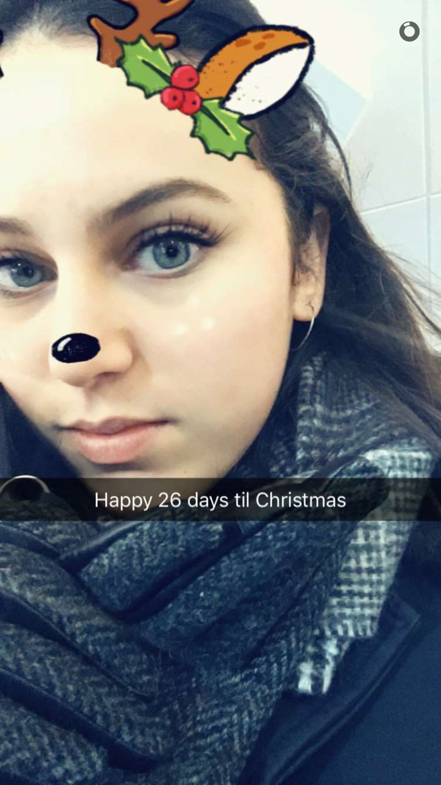

In a few days it's going to be 4 months (yeah, wtf), and I know we've been apart for a lot of that time. But we've also had a lot of amazing experiences and I thought it would be nice to highlight some of them. Every day I'll try and post about a date, trip, or experience that we've done, or maybe just some music that we're both into. So here goes, day 1.
Speaking of day 1, let's throw it back to a message that will never get old. Your first rejection! How exciting...

Oh but you weren't done yet. Part two was yet to come:
Nothing like the weather to get out of hanging out with that annoying kid who I keep seeing. But I didn't give up and soon even got your number, this was a big W:

And what do you know we even hung out a little bit:

And what do you know, I think somewhere along the way you decided that maybe you should give me a chance as much as you would have rathered been studying orgo. And so when you invited me to Semi, I knew I had a chance (@Gramps thanks for calling me a nice young fellow).
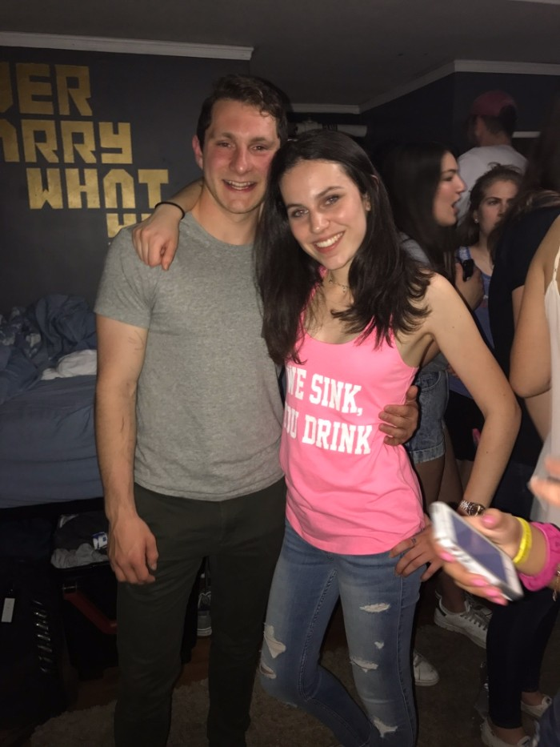


All jokes aside, I'm so glad that I ended up at SAE that one night at the beginning of Spring term. Thanksgiving may be over but I am damn thankful things worked out the way they did because you make me really happy. Merry Christmas.
-Isaac
First of all, happy advent? Yeah, I have no idea what to say there because it's not really christmas (I'm Jewish if you didn't know) but also a lil' birdy told me you were pretty into advent calendars (and I definitely have lots of time to spend making this, it's not finals or anything) so here goes. Disclaimer: It's definitely not as good as a chocolate or wine calendar, I know, but bear with me.
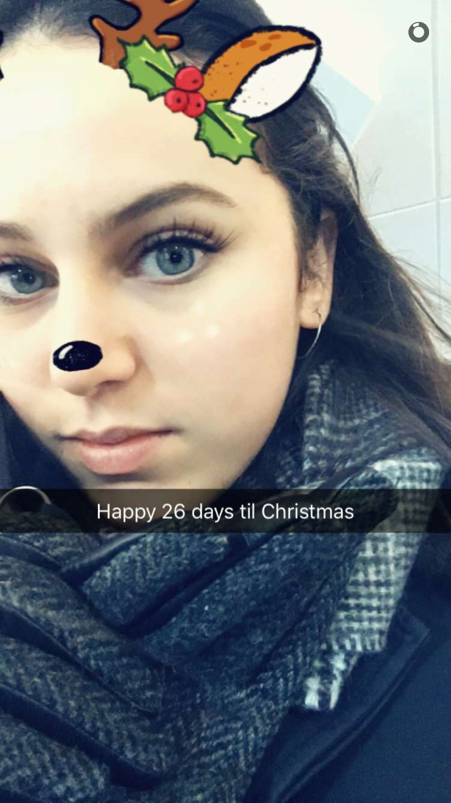
In a few days it's going to be 4 months (yeah, wtf), and I know we've been apart for a lot of that time. But we've also had a lot of amazing experiences and I thought it would be nice to highlight some of them. Every day I'll try and post about a date, trip, or experience that we've done, or maybe just some music that we're both into. So here goes, day 1.
Speaking of day 1, let's throw it back to a message that will never get old. Your first rejection! How exciting...
Oh but you weren't done yet. Part two was yet to come:
Nothing like the weather to get out of hanging out with that annoying kid who I keep seeing. But I didn't give up and soon even got your number, this was a big W:
And what do you know we even hung out a little bit:
And what do you know, I think somewhere along the way you decided that maybe you should give me a chance as much as you would have rathered been studying orgo. And so when you invited me to Semi, I knew I had a chance (@Gramps thanks for calling me a nice young fellow).
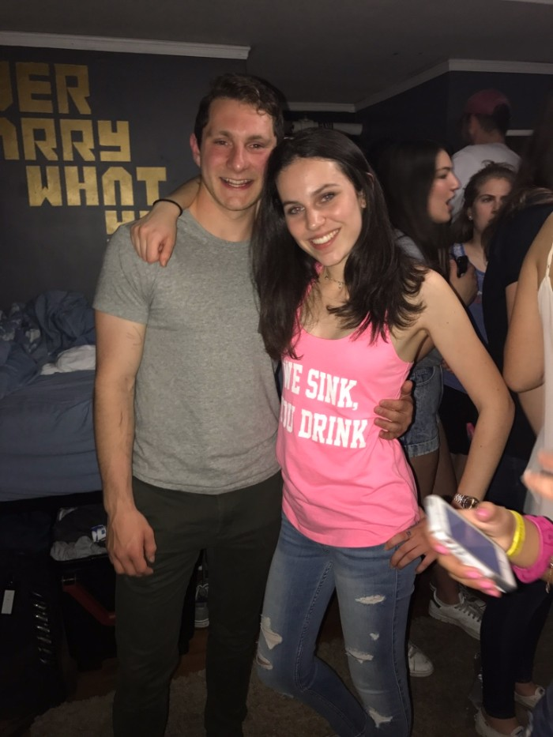
All jokes aside, I'm so glad that I ended up at SAE that one night at the beginning of Spring term. Thanksgiving may be over but I am damn thankful things worked out the way they did because you make me really happy. Merry Christmas.
-Isaac
Day 2
Day 2
Happy Day 2 of advent. Am I a day late? Maybe. Is it the thought that counts? Definitely.

.jpg)
This is probably one of the best day of Advent that we're going to have, BECAUSE (correct spelling) I'm here in the best city with you. I feel bad about not having this ready in time, but all I have to do is think of how amazing (note still to come) yesterday was and the timing seems less important. From Dynamic Earth,


to our shitty mojitos, to our classic sushi dinners, to the Edinburgh Christmas Markets,

I'm really going to miss it here, and miss you even more. Time has really flown here and I can't believe our time in Europe is ending. This next term is going to be long and is kinda scary, but this weekend has really reminded me just how much fun we have together and why it's all worth it.
Maybe I'll see you on New Years (fingers crossed), maybe I won't see you at all until spring. Either way, I'm already looking forward to getting tripped, getting sushi, and trying on fun hats.


Now get off my beautiful site and get to work.
- Isaac
Day 3
Day 3
Merry Day 3 of Advent! This day is (was going to be) focused on work, the real reason I visited this weekend.
So I figured I'd do a lil expose on you and work. That is, afterall, one of the first things I knew about you: you work a lot, and are good at it. Throwback to you studying orgo all the time and not wanting to get Gelato.
Your ability to grind out so much work on such a variety of subjects is something I've always admired about you.
That you can go from 20 hour orgo days in the library, to cranking out 2000+ words a day of philosophy on a class you claim to not even understand, truly baffles me.
Soooooo, I decided to compile some of my favorite moments of you/us doing work over the past few months.

 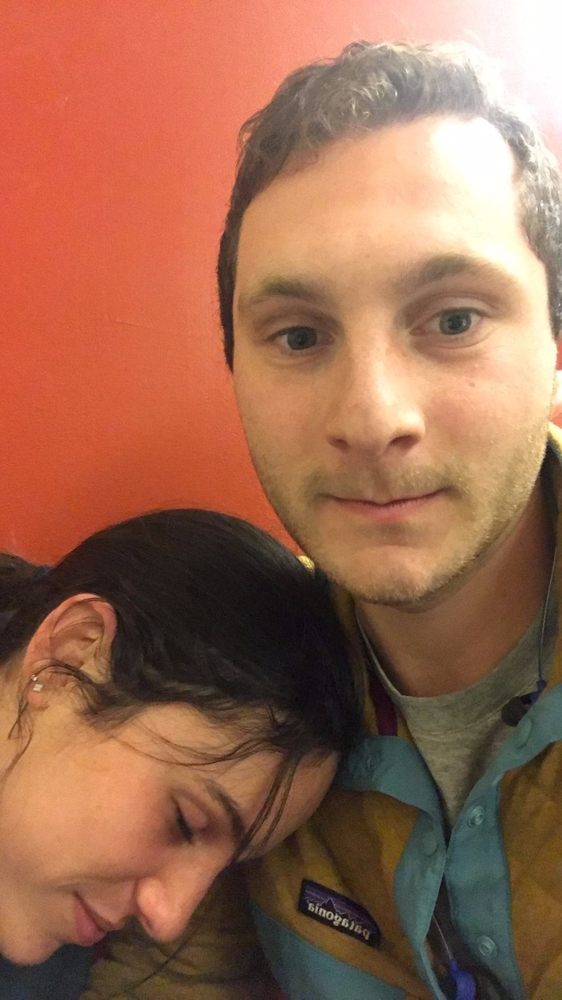
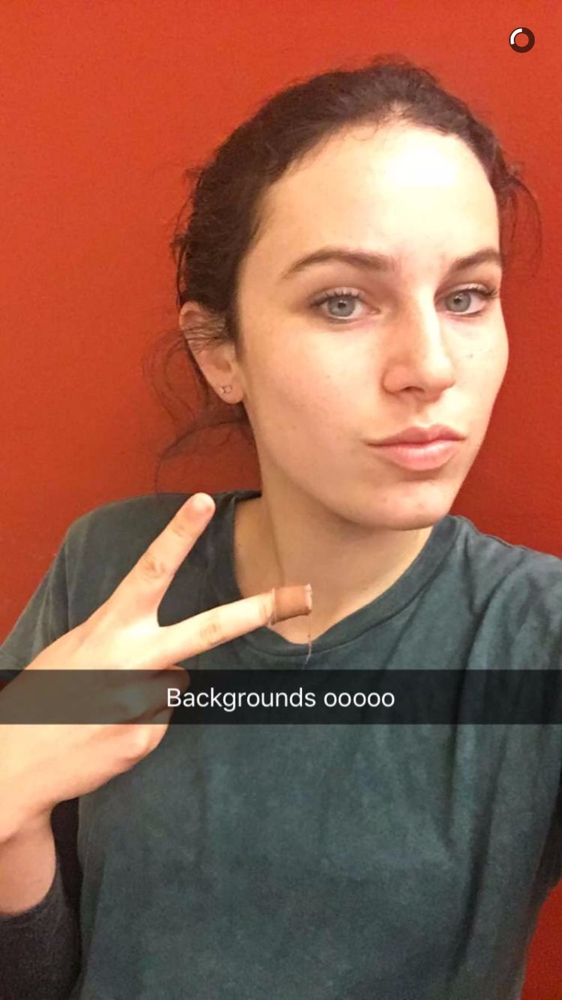
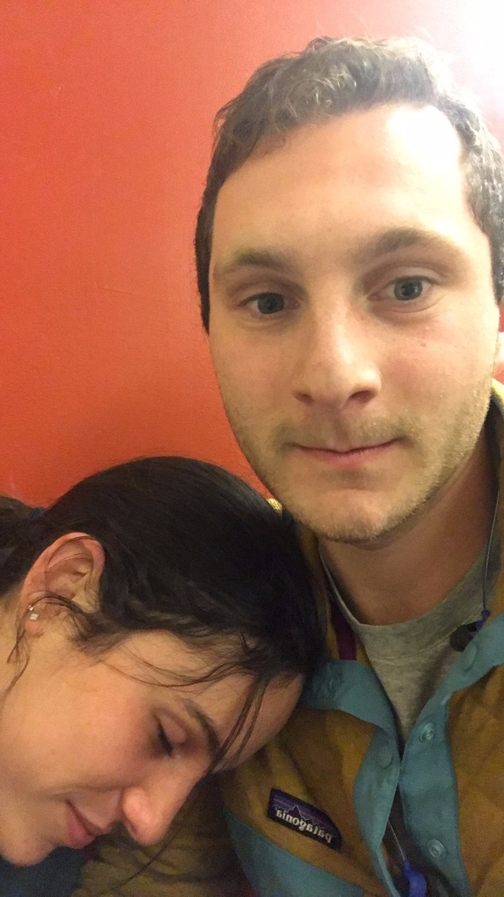
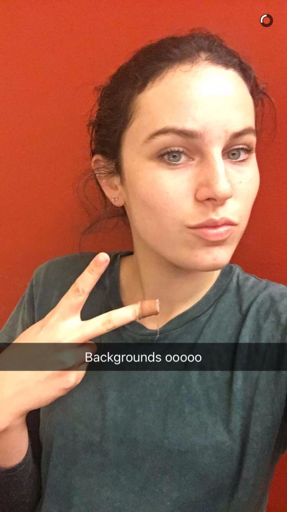
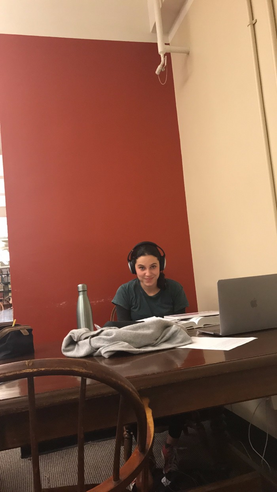
 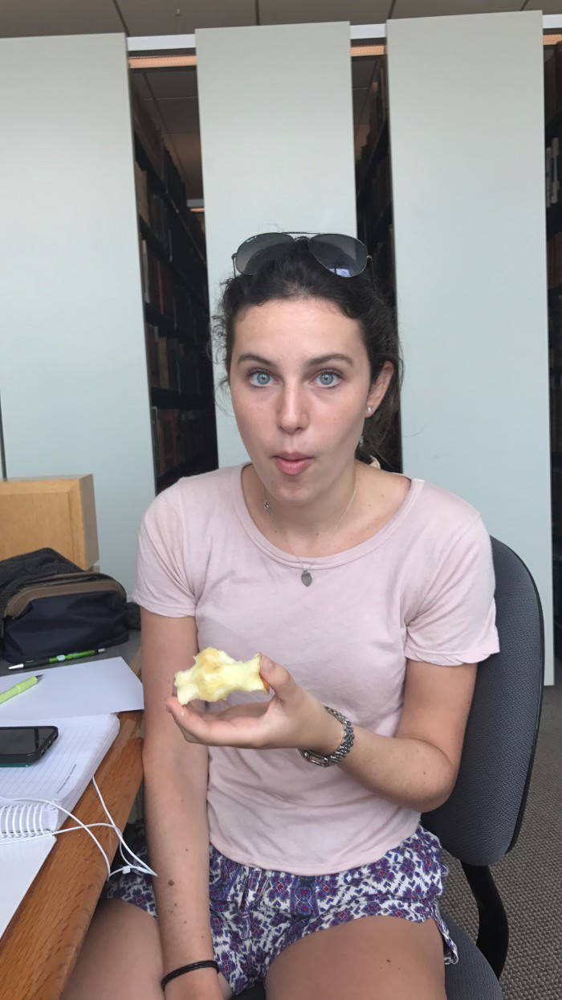
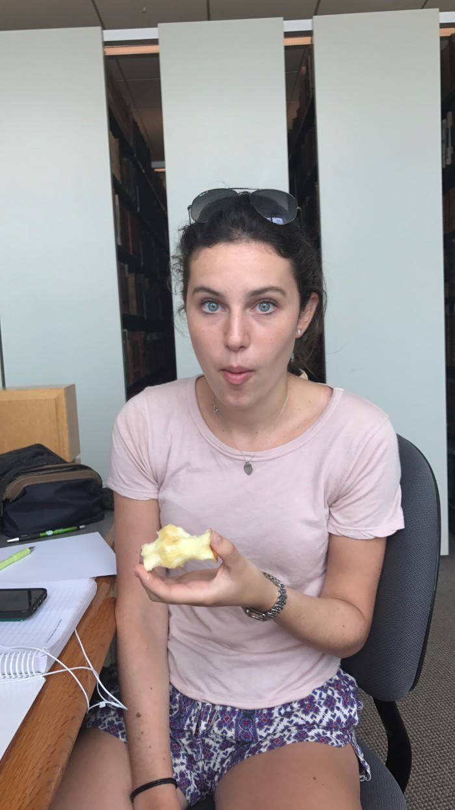


 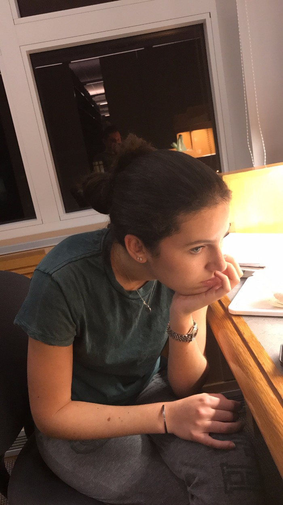
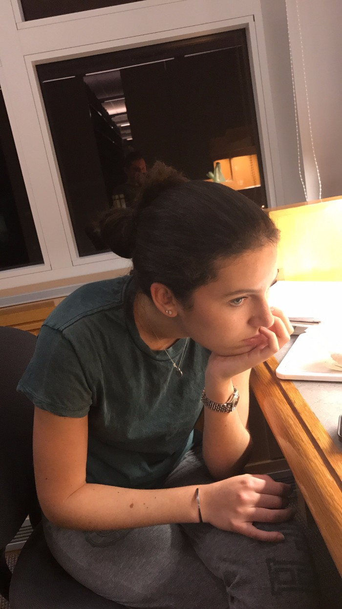
I know you're feeling stressed about work right now. But from all past experience and stories, I am so beyond confident that you will not only complete, but crush these dumb essays. And do it in style.
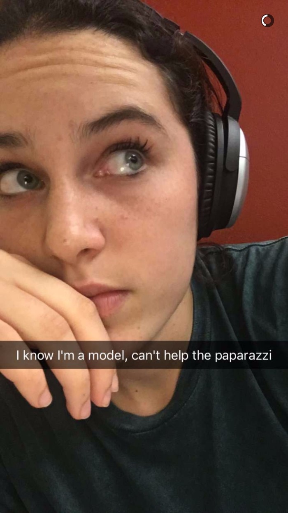 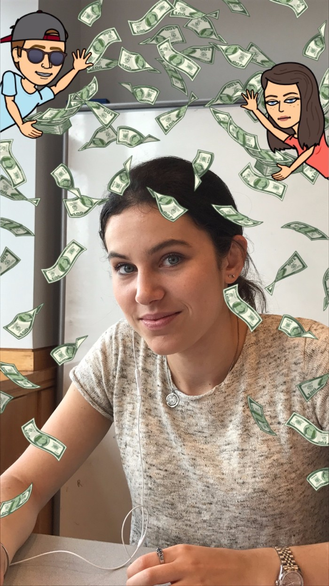Looking forward to reading them.
-Isaac
Day 4
Day 4
Happy Day 4 of Advent! After our amazing weekend I thought I'd use this as my platform to give my lil recap, so here goes.
​Edinburgh 12/1 - 124
​​12/1 Arrival (this only gets its own section cus you’re a butt ğŸ’)​
​Upon my arrival late 12/1 âœˆï¸ I was savagely tricked into thinking I’d have to ride all the way to your room alone 😒😤😖😢 and for this you received this sassy message

​But I won’t lie, made me very happy to see your cute face standing right there when I came out 😊 and you were wearing those nice leggings ğŸ˜
And to make it even better you even got me a chicken 📠siracha wrap from Hula ğŸ˜
We got back to your room, I dropped my stuff and we... caught up... until about 5 in the morning when we took a couple hour nap 😴 and then got back to catching up 😉
Oh, I also gave you your surprise, the best advent calendar 📆 everrr!!!!!
​Saturday 12/2
​Finally we decide its time to formally get up Ⱐ, I pick out your outfit (so naturally you look🔥)

​and we make some breakfast oatmeal 🳠then head out to Dynamic Earth ğŸŒ
Turns out Dynamic Earth has a target 🯠age range of about 9, but we still manage to have some fun and watch a weird show
​Next we head to the Grassmarket Area and Pumpkin Brown 🃠for lunch where we get some interesting vegan salad situations which are definitely not enough food
​Afterwards we hit the famous Mama’s Milk Bar for some interesting ice cream 🨠paired with a delicious dark hot chocolate ☕ï¸
​We move on to go a lil grocery shopping for mojito materials! ğŸ‹ğŸƒğŸ¹ and then head back to the room for a shower 🚿 and some fun â˜ºï¸ before dinner
​After a strenuous decision making process we settle on Tangs for a classic tasty dinner of 🣠and noodles ğŸ
​Post dinner we head to the Christmas Markets!! 🄠to peruse and get waffles! While I really wanna go on rides 🢠your mom told you no so we don’t go on any
​Finally, we are crazy exhausted 😴 😩 after all the catching up the 1st night so we head back to your room to go to sleep p early san mojitos (a good idea)
​Sunday 12/3
​After a spectacular nights sleep I am given the best wake up of all time 😠and then we start the day
First, we head to Urban Angel 😇 for breakfast and after a 30 minute wait that we use to walk ğŸš¶ï¸ around and checkout another Christmas market ğŸ„
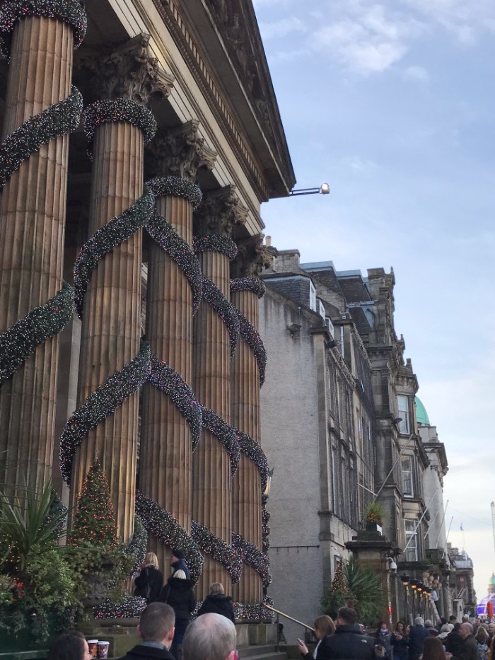
​We are eventually seated and you get your oatmeal and I get arguably one of the best avotoasts (maybe even breakfasts) I’ve ever had
​Next on the agenda is the real purpose for the visit, work! 📚 💻
We make moves to U Edinburgh where we stake out a table at the Edinburgh Periodicals and get to work 📓 âœï¸

​I block all social media 🙅 and distraction sites from your life to help you concentrate on your essays
​After an albeit short but productive sesh we head back to Christmas market central to go Ice Skating ⛸ stopping by the Christmas markets 🄠again along the way to get a quick yummy snack
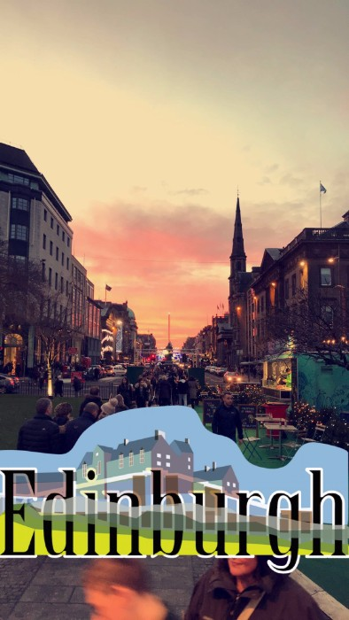
​With big plans we move on to Hula where I try a new sandwich 🥪(not as good as the chicken ğŸ”siracha wrap) and get my yummy breakfast for the next day (it was really good) although some hats 🩠are tried on along the way at, you guessed it, the Christmas markets ğŸ„
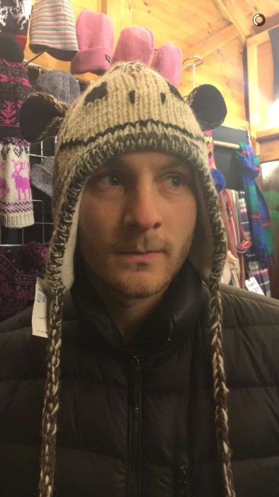
​We stop for a quick but tasty Bubble Tea ğŸµ
 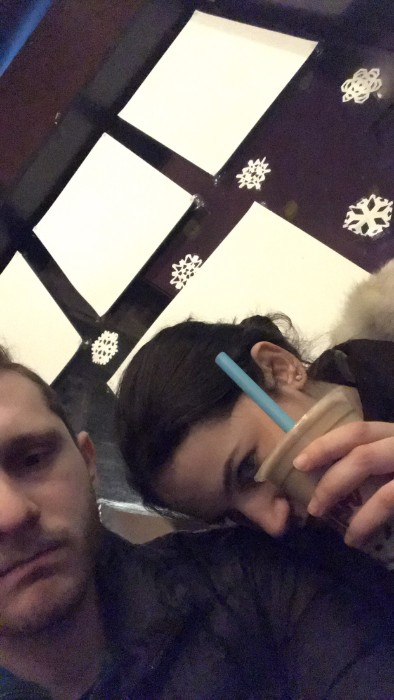
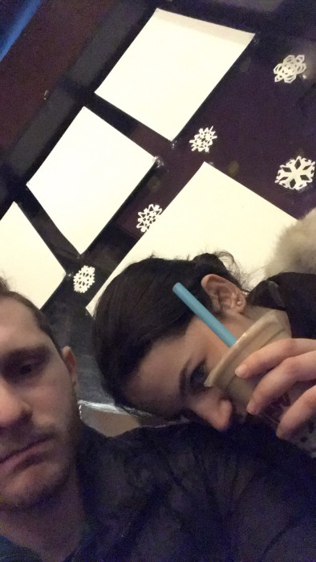
​before skipping the Nelson Monument and going to get groceries for a spaghetti ğŸ with meatballs dinner
While shopping we also make another exciting purchase:
 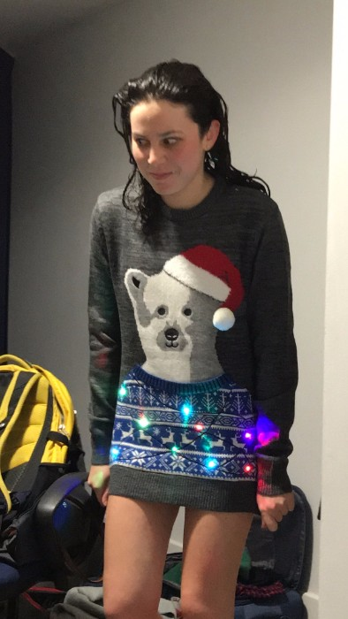
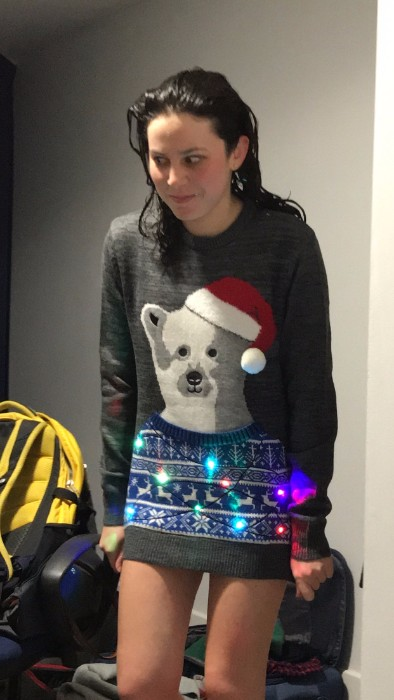
​Light up Christmas sweaters!!!!! So lit ğŸ„💡
​We tried to watch a movie (Holiday I think?) while we ate the amazing dinner we (read: mostly you) made, but the movie didn’t work out too well 😉 and eventually tiredness forced another quick nap 😴
​12/4
​A sad morning when I have to leave at 4:30AM 🕟
​Made even sadder 😢 by how great our weekend was and the uncertainty of the next visit
It’s been an amazing term abroad, thanks 💕
-Isaac
Day 5
Day 5
Happy 5th day of Advent!

Today is the first full day of advent I'm not with you which is making me really sad. Today, however, is not all about sadness. While I meant to do this on the 4th, you'll just have to go with it.
Today marks the day of one of our favorite dates. If you remember on July 4th, we hiked Mt. Cardigan for dinner, some amazing views, and fireworks!! I think it was our first date after talking and you saying you wanted to do more date like stuff and I was really proud of planning something like that.
Anyway, amidst all this essay writing, studying, and test taking, I hope this can take you back to a better day, date, and time, when the views were good and the company was better.


Sorry about the picture.
-Isaac
Day 6
Day 6
Happy Day 6 of Advent
I know we aren't in the best place right now, but I still care a ton about you and and you love Christmas so by the transative property (of me being a nerd), Christmas matters a ton to me as well.
That being said, here are some pictures of you, and us, at some of the top Christmas markets around the world.

Basel, Switzerland

Budapest, Hungary

Berlin, Germany
-Isaac
Day 7
Day 7
Happy 7th day of Advent!
This summer, winter may have been coming. But at this point I think it's safe to say winter is here (#GOT). With the cold weather and short days I thought it might be nice to throw it back to some summer memories in true TBT style.
There were a lot of things I loved about this summer. And a lot of them involved you. But some of my favorite memories happened just hanging out down by the river.
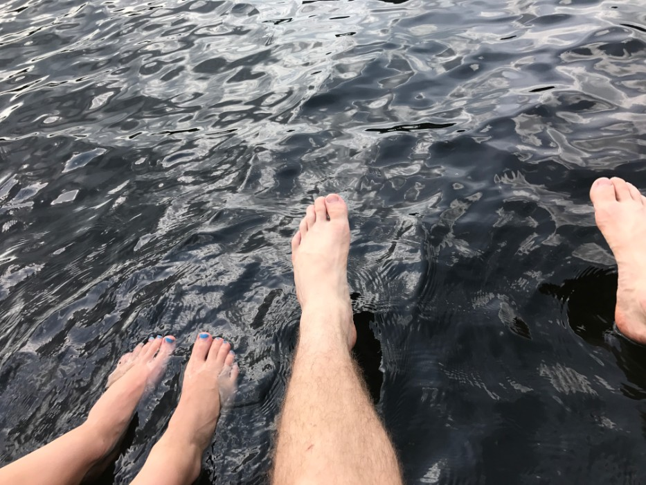I always looked forward to those slow afternoons when we'd just sit on the dock and have so much fun.
From taking goofy selfies, to funny diving videos, to actually swimming, I'll just try and take you back with some of my favorite photos (like a boss).
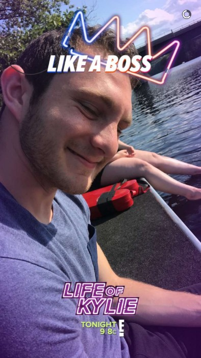I know this one may not be your all time favorite photo. But (and I've checked around to confirm), I think you look absolutely beautiful (and just a lil sneaky).

These two may not technically be at the river, but had similar vibes.

There's nothing like a sassy Juliana.

Thinking about you a lot. Have a good one.

-Isaac
Day 8
Day 8
Merry Day 8, only 1 day late! Ok sorry I'll stop rhyming.
First of all, while I know we haven't been physically together for the whole time, happy 4 months. Now to the fun.
It may be a classic, but a movie date is a classic for a reason, and we've see quite a few.
We've netflixed and chilled, chilled and watched netflix, gone to outdoor drive in movies, gone to indoor stay in movies, seen good ones, and objectively the worst movie of all time. We've watched tv in the US, Edinburgh, Budapest, and Stockholm.
It only seems right to feature some favorites and other movie memories we've shared.
First of all, let's just get this nonsense out of the way.

This one we haven't seen together, but it's a favorite of yours and the poster oportunity was too good to skip over.
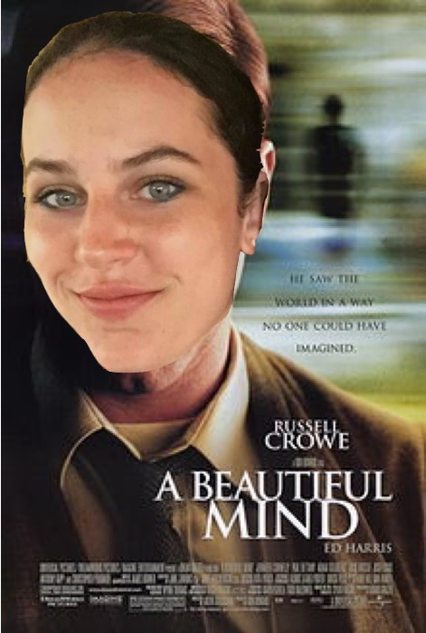I thought it might be weird to put our faces on these ones...
And of course....

Here's to many more movie nights in, netflix and chills, and any other type of movie date we can think of.
-Isaac
Day 9
Day 9
Merry Day 9 of Advent! (reminder to keep reminding me how many days until Christmas)
You often take the time to remind me of how funny you are. "I'm a comedic genius," "I'm so funny," and "I'm highlarious" are all classiques.
Now I don't say this to make fun, I genuinly think you're right. Often times, your hilarity is shown through photos, so I thought I'd share some here.
In going through photos for this one, I realized that there are WAYYY to many funny photos, so I may have to do a rerun later...
Hehe
Good times! Such Funny!
I really was having issues. And oh Madison...
~Gucci~ I can't wait to get back to my Christmas sweater.

I hope looking back on these can make you as happy as they make me.
-Isaac
Day 10
Day 11
Day 12
Day 13
Day 13
Happy Day 13 of Advent! I finally got one of these bad boys again, thanks for the reminder of how many days:
Sorry for getting this one up a little late, yesterday was not exactly the best day if you remember.
Speaking of which, thank you so much for sticking around yesterday. Meant a lot to have someone diagnosing me, giving me advice, and sending adorable snaps.

Even if you got distracted sometimes ;)
I love when you try and do the triangle face and the fish is obviously a classic.

Oh, and then here are some other really funny recent ones!
Anyway, I hope you have a wonderful time in Copenhagen and Iceland. I can't wait to hear about them!
-Isaac
Day 14
Day 15
Day 16
Day 17
Day 18
Day 18
Merry 18th day of Advent!
Today I thought I'd do a rewind to one of my favorite weekends of the entire term - our visit to Stockholm.
Friday 11/17
At 3pm pick up Juliana at the airport Take the ~Arlanda Express~ to the city center and then cab to the airbnb which is You brought your Woolrich so you’re an Eskimo
​After a tour from Adrian the model and making ourselves at home we head to Biblioteksgatan #Woolrich and then dinner at Tako which turns out to be crazy expensive but just about the best sushi ever!!! (And a fancy atmosphere as well) Even tho the cocktail was p bad....
​Next we walk over to Fotografiska, an incredible photo journalism 📷 museum with a really powerful exhibit on some of the atrocities in the Middle East, Africa, Eastern Europe and Haiti There’s a photo booth....
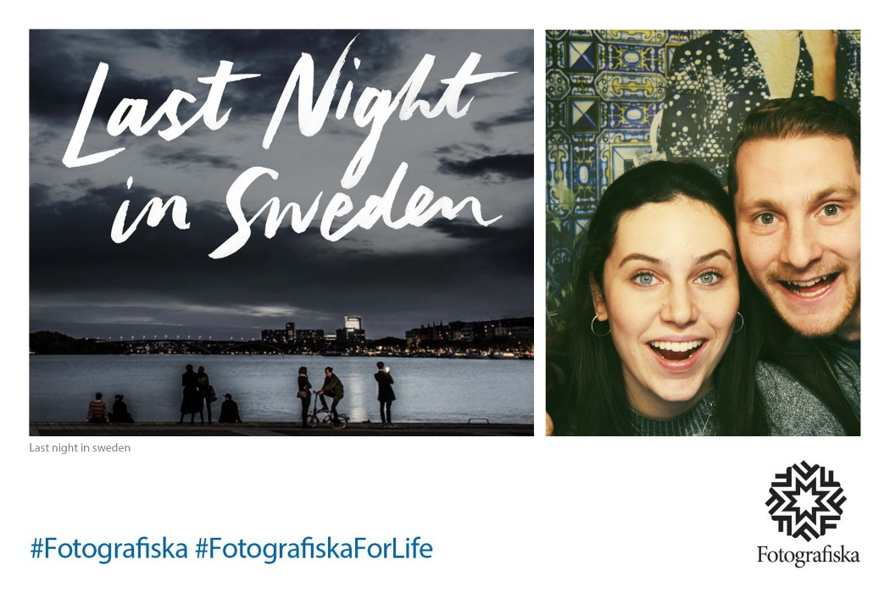​ We get drinks at the roof for the view Next we take a hike up the cliffs of Fjällgatan for some more ~views~ and some pics
​We then walk around looking for a place to buy cocktail ingredients (which we never make because there are only state liquor stores!!!!) but we get grapes peach candy, and mint chip ice cream so it’s all ok
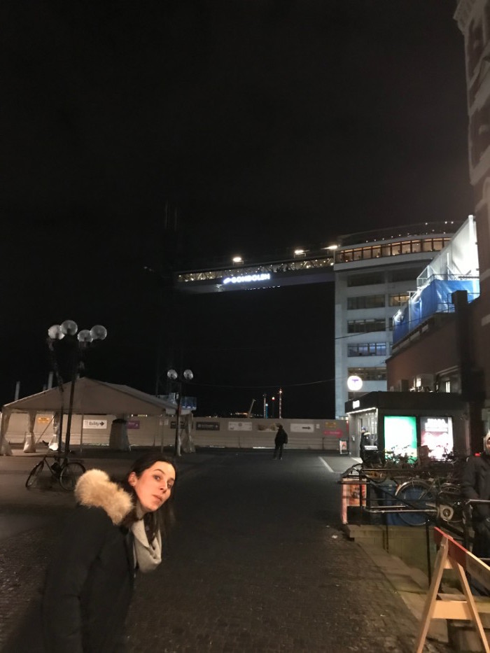​Finally we head home and eat the weirdest grapes ever and watch some VD which you promptly fall asleep for (I notice a trend) until we stop watching and you get verryyy awake ;) We finally drift off
​Saturday 11/18
​Wake up at 8!!!.... kind of ;) By 9 you give me the nicest wake up eveerrrrr and we get ready to head out We head to Chokladkoppen for breakfast for some honestly underwhelming cinnamon buns but some tasty pancakes Next we begin to explore Gamla Stan (old town) starting with the Nobel Museum, a really cool museum about Arthur Nobel and the nobel prizes As we leave it begins to rain in Stortorget, the main square, and I don’t have an umbrella
​We make a quick detour by the Royal Palace because it’s kinda pouring We wander through old town taking in the sights as it stops raining
​Finally we get to Marten Trotzigs gränd the skinniest Street at only 90cm wide!!!
​It was time to get to the boat bus destination but we are real hungry so we make a quick pass of Parliament and make a pit stop at Wayne’s Coffee for some tasty bagel sandwiches Finally we head to Stromgatan where the bus leaves from!
We embark and begin the bus tour which is so fun, it’s also golden hour so all photos are fricken beautiful
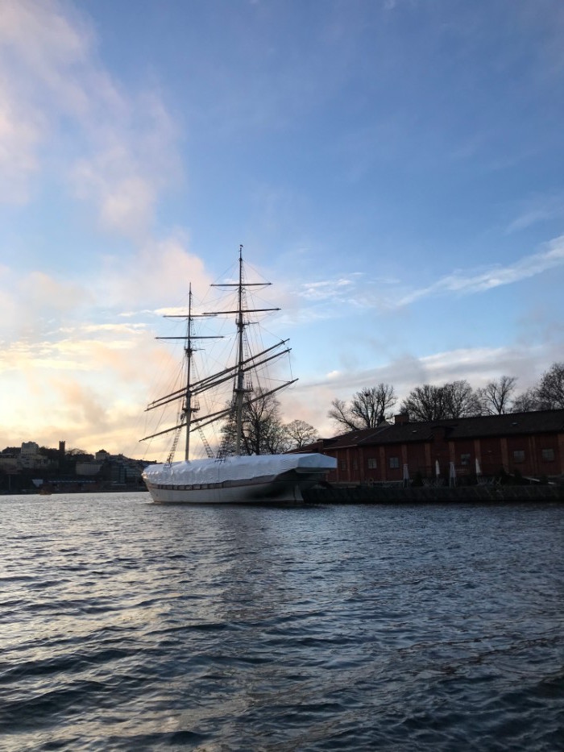​After the 3 hour (jk 75 min) boat/bus tour we hop off an make moves to Kungstradgarden where we saw an ice skating rink!
We grab skates (even though they are only hockey) and hit the ice.
Turns out I’m pretty good and while you’re not bad either you pretty much take all circulation out of my hand for the first few laps.
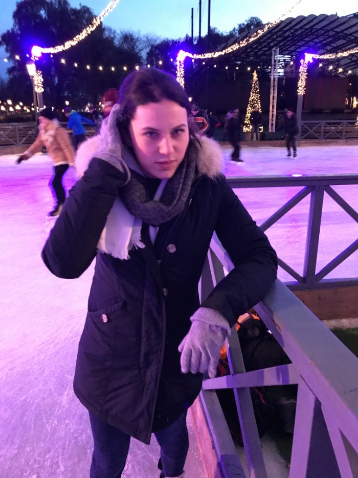​Ice skating is a ton of fun but our feet start killing us to we are forced to go get hot chocolate and mulled wine
​Our dinner reservations are for 7 so we have some time and we decide to hit the Spritmuseum
It’s not the best museum ever but there are some funky smells, a weird lil bus where we listened to drinking songs, and a bad trivia game
We also saw a weird movie about what it’s like to be drunk and a room that depicts a hangover, neither were particularly accurate
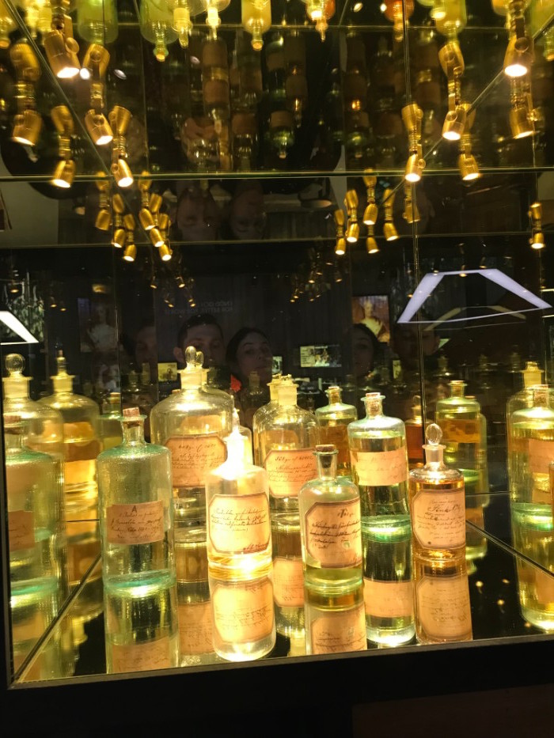​We headed out to make our way to dinner but on the way encounter MOOD Mall and since we are running early #wow we take a peek
Turns out it is a beautiful mall, with tons of Christmas and holiday decorations and chic restaurants AKA your heaven, we decide we will return
​We press on to Nalen restaurant for dinner and we get Swedish Meatballs!!!!! They are so gooodddd and the bread is really good, you give the restaurant an 11/10
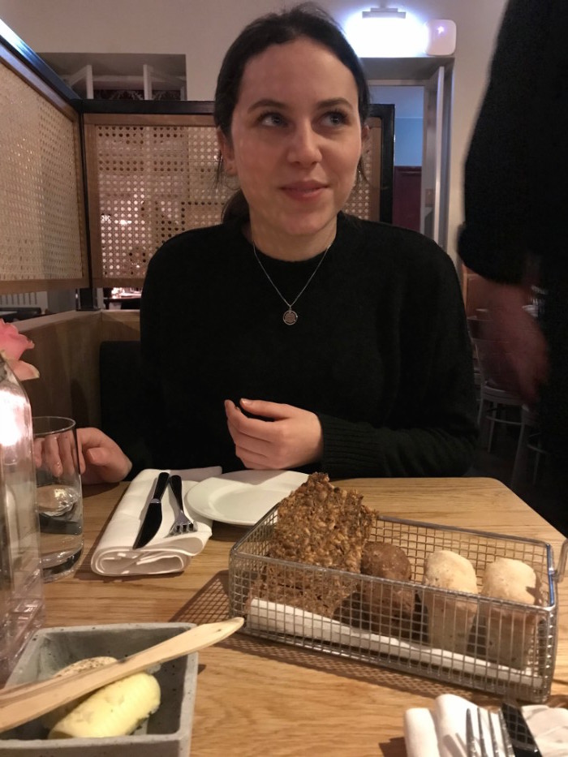Next we make our way 1 building over for the Avantgardet concert!!! Our first warning sign is that we bring the average age down 10 years.... We wait for 1.5 hours which feels like a full day before finally they take the stage They are crazy the guy is running around the stage dumping water on himself and stealing other peoples mics within seconds
We stay for a few songs then bounce lol After a long train ride home, I shower and we get ready for bed
After another night of VD and fun we fall asleep
Sunday 11/19
Another early wake up and some sefies
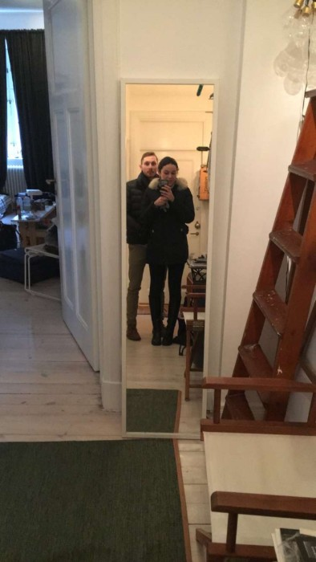First is Cafe Saturnus for some delicious omelettes and a better cinnamon bun Next we head to the Vasa Museum which is huge! Really cool ship museum about a failed ship lol

Feeling tired and cold, we take a peek at Skansen and Ekoparken but don’t stay Instead we head back towards the center and walk down Strandvägen, a fancy street on the water We pass by the Teatern and give a hug to the warm statue
Getting hungry we head back to MOOD Mall for a delicious lunch of zoodles at Icha Icha
After walking around the mall we head to the closed Östermalms Saluhall to take a look We decide to rest before dinner and head home
You have a lil headache so I make some tasty cinnamon mint tea and grapes and walnut
Mid kiss my nose decides to be a drama queen and I get the worst nose bleed of all time all over your face sorrrrrryyyyyy (and all over the sheets, blankets and the whole house)
After cleaning up from the murder we head to East for dinner, the food in Stockholm May be pricey but it’s so good
After dinner we head home to watch dinner for shmucks which, shocker, you fall asleep for even though we have popcorn and more ice cream We finally go to sleep
Monday 11/20
Wake up at 6 something and clean up before finally heading out to the airport plane to drop you off and then head home
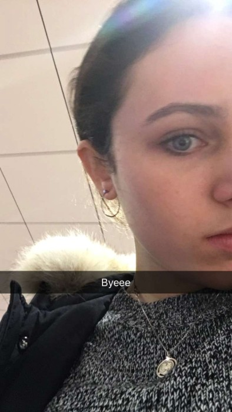And when you finally go, this is what happens.
-Isaac
Day 19
Day 19
Happy late 19th day of Advent!
As it gets colder and colder here, I thought I'd do another throwback to the warmer months. I thought I was able to highlight some really good memories from this summer. But there were definitely too many to fit so I thought I'd throw a few more in. Here goes:
I'll start with a night that may have started in pain, but was still surprisingly fun. I'm going to be honest, I don't even remember what exactly you were making in the first place. All I remember is you grabbing a scalding pan and burning you hand to bits.
While you were in a ton of pain, and I felt terrible, we still managed to make some fun of the situation.
First of all, you were being ridiculous like usual.
(No shit, silly)
And somehow, even though we were in bed, the night turned into a water fight.

Thinking back on this night makes me think about how much fun we can have even in an inherently shitty situation.
Moving on, a little out of order timewise, to when I was helping you pack to leave. Again an inherently shitty situation that I remember being surprisingly fun, as all time with you tends to be.

And finally, I wanted to throw it back to one of our last dates. I planned a picnic dinner in the golf course gazebo and it was just as fun as it sounds, even though it did get a little buggy.

In fact, that may have been the night the patagonia became yours. I wish we could be back there right now. But these hilarious pics that came from that night will have to do
Merry 2 days after Christmas ;)
-Isaac
Day 20
Day 21
Day 22
Day 23
Day 24